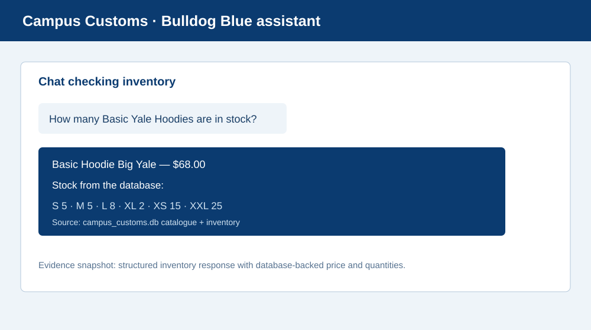
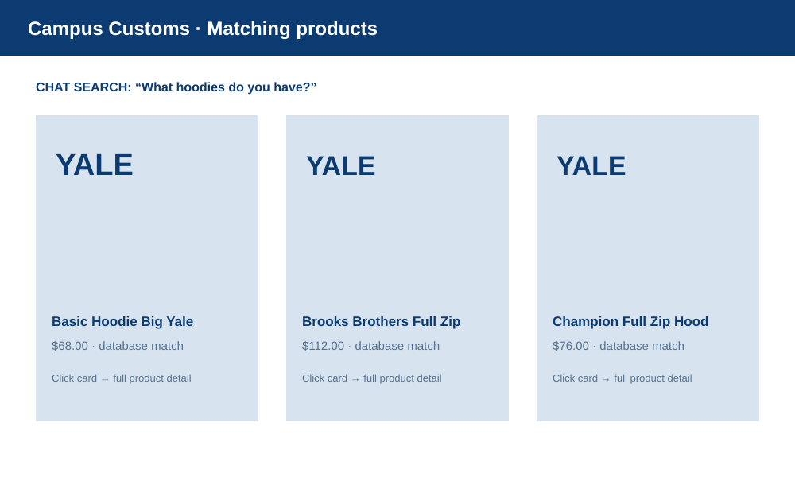
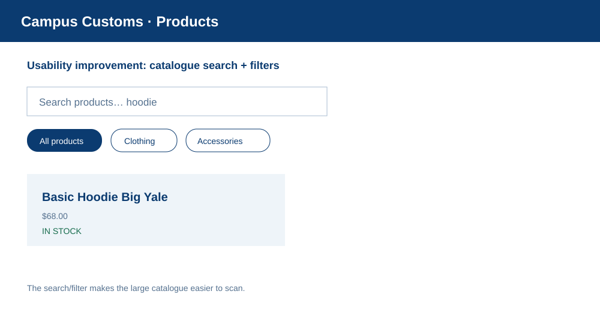

frontend/node_modules or FastAPI/Uvicorn installed, so a browser-level live run could not be completed in this session. The evidence below is clearly labeled implementation/data evidence and uses real values from data/campus_customs.db; install dependencies and run the documented servers for final live verification.
This proves the intended structured inventory response: Basic Hoodie Big Yale is priced at $68.00, with size quantities S 5, M 5, L 8, XL 2, XS 15, and XXL 25 from the catalogue and inventory tables.

This shows the Problem 7 contract: a hoodie question returns product cards with image area, name, price, and short information; each card is wired to the existing single-item detail behavior.

This shows the Problem 9 catalogue search/filter improvement, including an active search query, category controls, and an explicit in-stock status on the matching product.